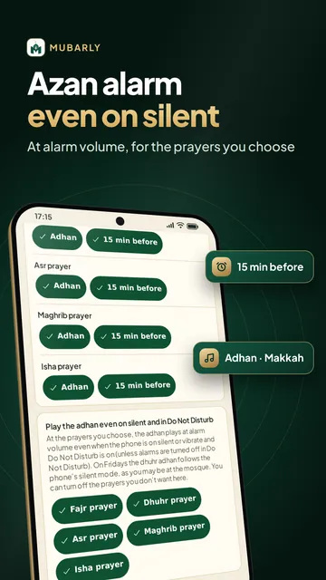
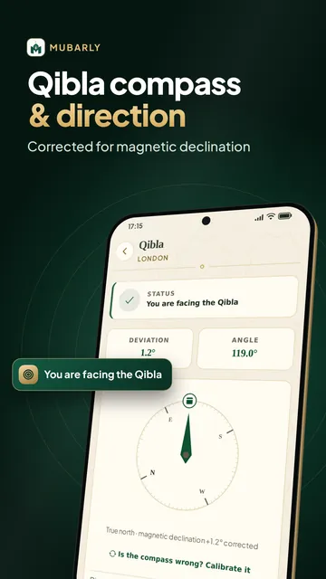
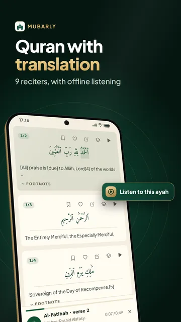
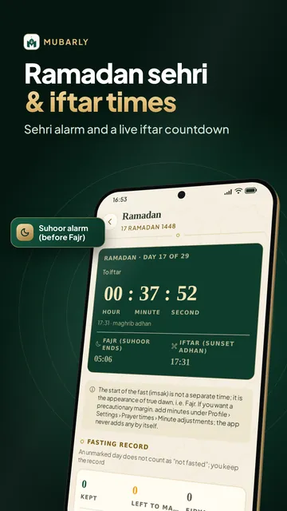
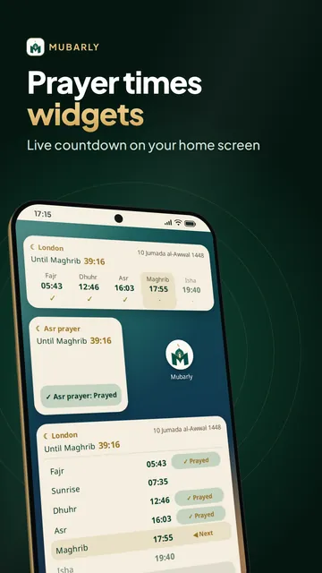
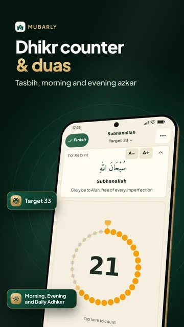
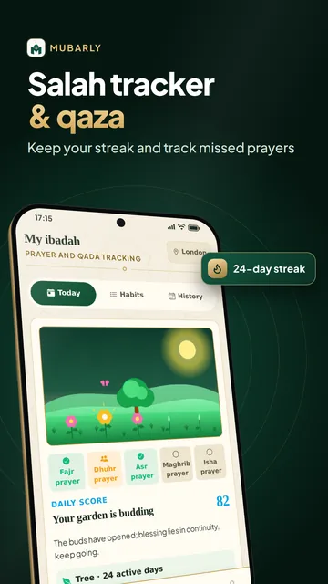

Prayer times & azan anywhere







Mubarly is a Muslim prayer app with accurate prayer times and an azan alarm that can ring even when your phone is on silent. Find the Qibla direction, read and listen to the Quran with English translation, and keep duas, dhikr and Ramadan times in one place. Made for Muslims of all four schools, it needs no account, and prayer times and alerts work offline.
Prayer times and azan alarm
- Namaz times anywhere in the world, calculated on your phone with 14 calculation methods
- The azan can ring at alarm volume even on silent or in Do Not Disturb, so it also works as a Fajr alarm; you choose per prayer
- Adhan (athan) sound: the opening takbirs in Makkah, Madinah or Balkan style, or a soft tone
- Reminders before each salah
- A guided setup turns on what the adhan needs and warns you if it could be late or muted
- Prayer times widgets for your home screen with a live countdown
- 30-day timetable as PDF, Hanafi or Shafi'i Asr and high-latitude rules
- Islamic calendar with hijri dates, holy days and blessed nights
Ramadan (Ramzan): sehri and iftar times
- Suhoor alarm at alarm volume, even on silent, repeating until you tap "I'm awake"
- Iftar alert and a live countdown to the end of sehri and to iftar
- Ramadan 2027: fasting rules for your school and a fasting and tarawih record
Qibla compass
- Corrected for magnetic declination, works flat or upright
- No compass? Find the direction by the sun or on the mosque map
Quran
- The Arabic text is built in: read it offline in Uthmani or simple script or as 604 mushaf pages
- English translations with footnotes (Saheeh International, Pickthall), word-by-word meanings and tafsir (online)
- Listen to 9 reciters, such as Mishary Alafasy and Abdul Basit
- Download Surah Yaseen, Al-Kahf, Ar-Rahman, Al-Waqiah, Al-Mulk, Juz 'Amma or all 114 surahs to listen offline
- Bookmarks, notes, Alif Ba lessons for beginners and Islamic radio
Azkar, dhikr and the 99 Names
- Morning and evening azkar and duas for daily life, each with its source
- Dhikr and tasbih counter like a digital tasbeeh, with targets and the tasbihat after salah
- 99 Names of Allah (Asmaul Husna) with their meanings
- Hadith library with grades and explanations, and Forty Hadith
Learn salah, Hajj and Umrah
- Prayer guide: learn salah step by step and how to pray by your school
- Hajj and Umrah guide: rites step by step, day by day, with duas, a tawaf and sa'y counter and a packing list
- Stories of the prophets and key events of Islamic history
Salah tracker and qaza
- Mark each prayer on time, late or in congregation, keep your streak
- Qaza namaz calculator and tracker for missed prayers and fasts
- Women can mark menstruation days without losing their streak
Mosques, zakat and more
- Mosque finder: 300,000+ mosques worldwide with walking directions, and your masjid's iqamah times
- Zakat calculator for gold, silver and cash with live gram prices in your currency
- Family Mode, Khatm circles and a moderated dua community
For every Muslim
- Asr, fasting, qada, zakat, travel and menstruation rules, the prayer guide and the Hajj guide follow your school: Hanafi, Shafi'i, Maliki or Hanbali
- Content comes with its sources; for your own situation, ask a scholar
Easy to use, in your language
- Simple Mode with large text, high contrast and color-blind friendly colors
- 20 languages, including English, Urdu, Bengali, Hindi and Arabic
Every worship section is free, with no full-screen ads unless you choose to watch one and never an ad on the Quran, azan, Qibla, dhikr counter or dua screens. Premium removes all ads and adds Memorisation Mode, Sleep & Reflection (sleep sounds, bedtime tasbihat, breathing exercise) and extra compass and counter themes; a short video unlocks all of Premium for several hours.
Privacy: no background location, no camera or microphone. Prayer times and the Qibla are calculated on your phone, and Mubarly does not sell your data.